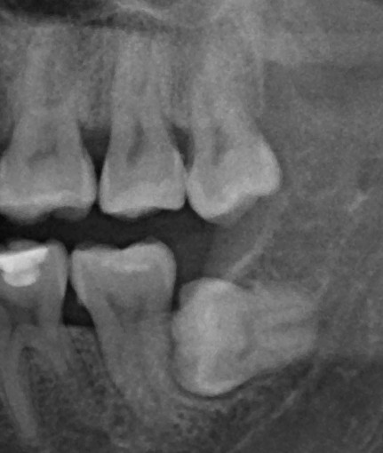

13
牙科特色
Specialty Dentistry
從乳牙到牙周，從幼兒到長者──牙科是婦幼跨齡守護的另一個關鍵節點。

34
13
三大特色 走向聯醫『牙周病中心』
智齒高手 ・ 牙周病專業照護 ・ 幼兒牙齒保健
Wisdom Teeth · Periodontics · Pediatric Prevention
婦幼牙科紮根西區數十年。「智齒高手」是長年累積的網路口碑，許多家庭從各區慕名而來、跨院轉診──這份信任，是時間與專業共同沉澱的結果。
兒童預防保健則是婦幼院區先天責無旁貸的核心業務；塗氟、口腔檢查與小兒科一站式整合門診串聯，把口腔保健融入每一次健兒回診的日常。
面向高齡化社會，牙周病是每個人在老化過程中的必經之路，將成為「老年牙醫學」的重中之重。婦幼有幸擁有聯醫系統少有的優質牙周專科醫師，我們正規劃朝向成為聯醫「牙周病中心」的目標邁進──讓守護從幼兒口腔擴大到全齡牙周。
Decades of trust in wisdom teeth, daily care for children's mouths, and a coming periodontal center — a full-life dental promise.
01
預防保健（兒童塗氟）
結合一站式幼兒整合門診，塗氟服務 2024-2025 年成長 +469%
02
阻生智齒（手術拔除）
口腔顎面外科處理複雜阻生齒，減少轉診奔波
03
牙周病專業照護
牙周專科醫師主導，從非手術治療到牙周再生
「從第一顆乳牙到一口好牙周，每一個階段都值得專業守護。」
35